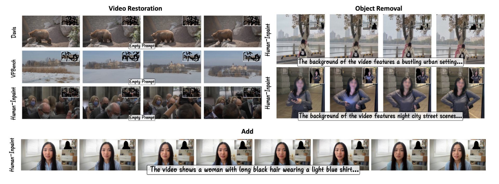
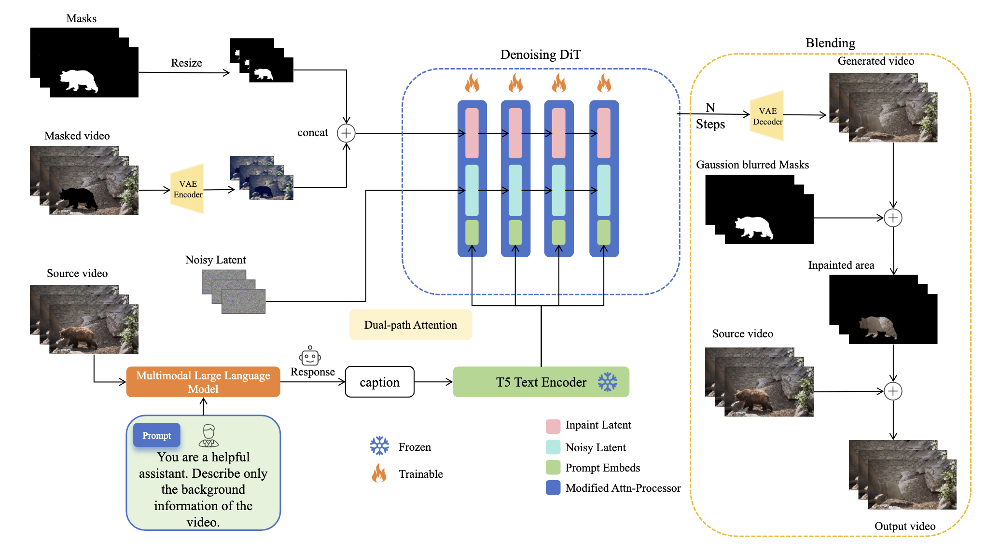
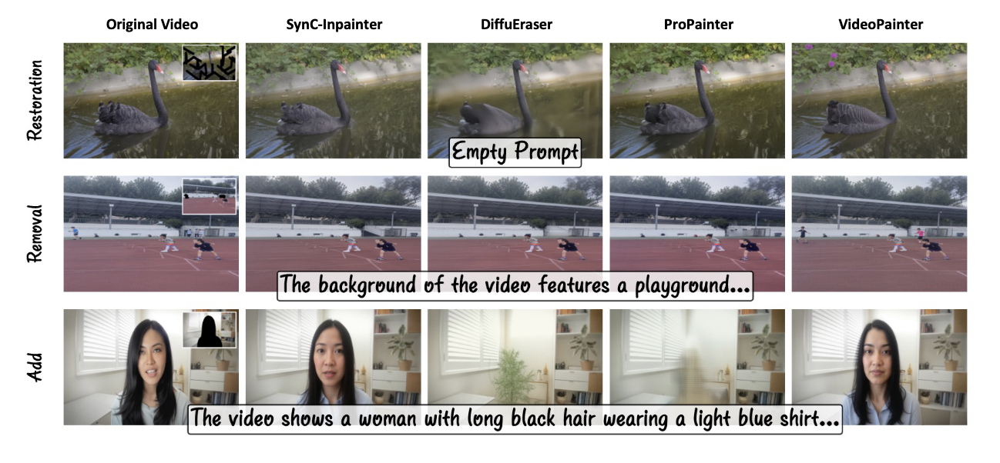

SyncPainter: Caption-guided Video Inpainting with
Multimodal Semantic Alignment

Abstract
Existing video inpainting methods often produce visually plausible but semantically incoherent results in complex scenes because they lack explicit high-level guidance. To address this, we introduce SynC-Inpainter, a novel framework centered entirely on caption-guided video inpainting. Our approach pioneers the use of descriptive scene-level and object-specific captions from large multimodal models (VideoLLaMA3 and Qwen3) to steer the generative process, ensuring strong semantic grounding.
This language-driven synthesis is supported by a mask-aware dual-path attention mechanism that preserves fine-grained spatial structures by separating self-attention on the noisy latent from cross-attention on the masked reference. Furthermore, to facilitate the development of such language-aware models, we constructed Human-Inpaint, a new large-scale dataset focused on human-involved scenes with rich textual annotations. Experimental results demonstrate that our caption-guided approach significantly outperforms previous work, particularly in removing human silhouettes and detailed textures, achieving superior visual quality and semantic consistency across a wide range of diverse video domains.
Method Overview
Scene-level and object-specific captions produced by multimodal large language models are encoded by a frozen T5 text encoder and injected into the denoising DiT, while mask-aware dual-path attention separates self-attention on the noisy latent from cross-attention on the masked reference, preserving fine-grained spatial structures.

Qualitative Comparison
Guided by descriptive captions, SynC-Inpainter removes human silhouettes and restores detailed textures more faithfully than DiffuEraser, ProPainter, and VideoPainter across restoration, removal, and addition tasks.
